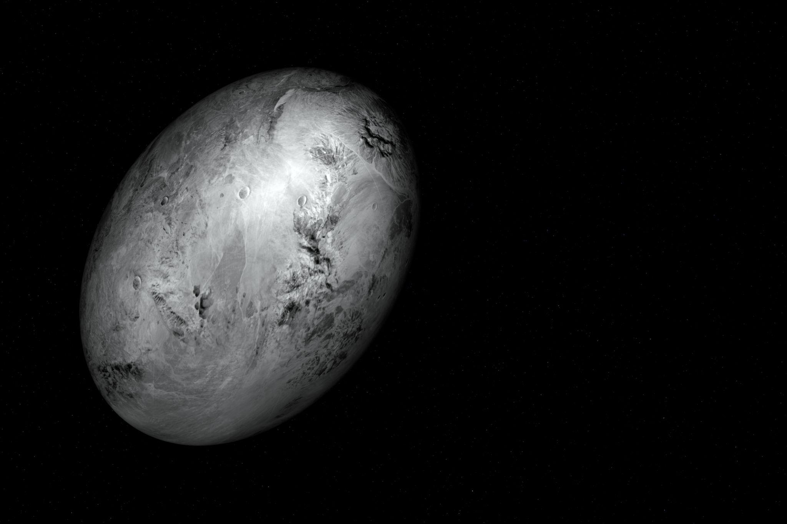
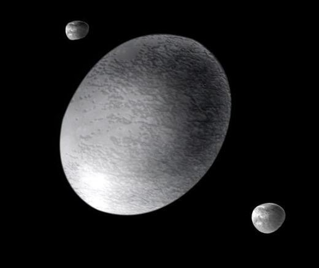
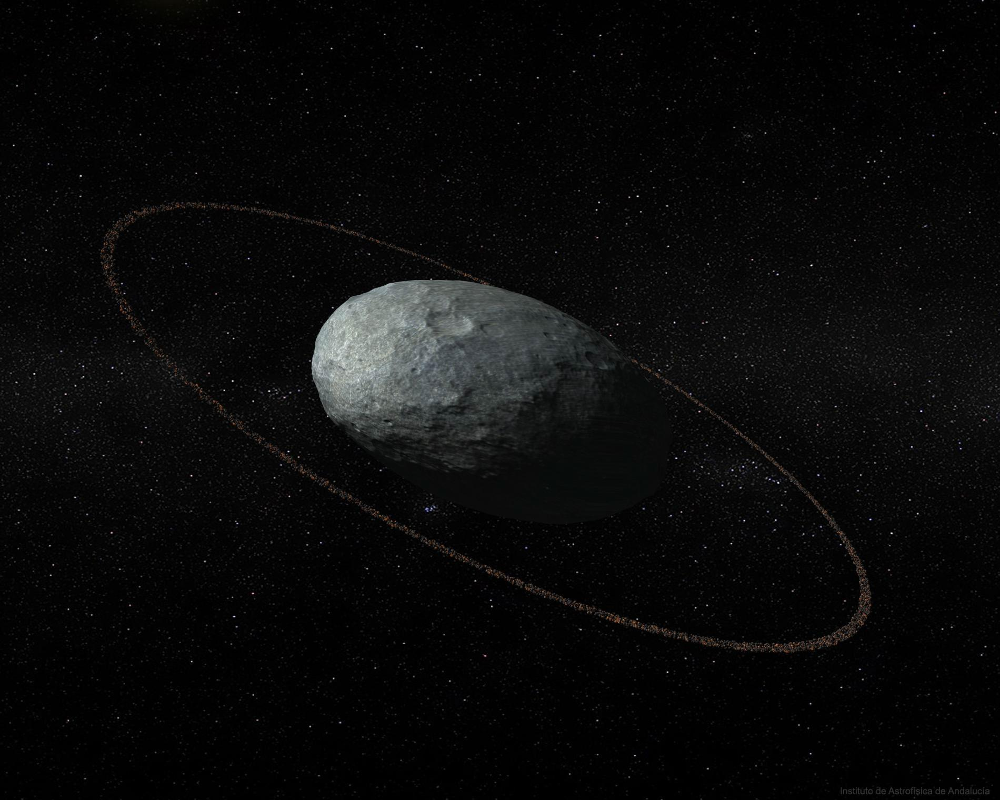
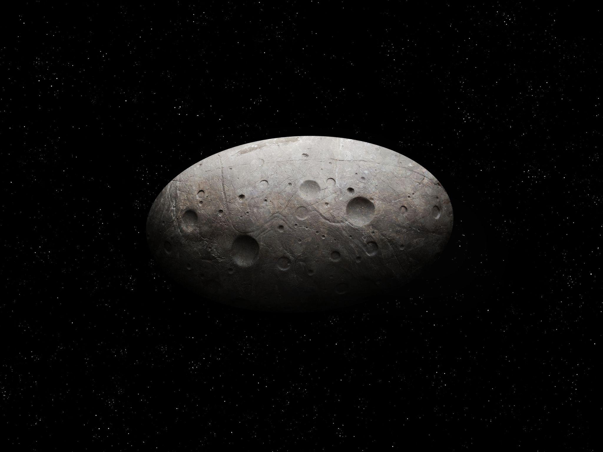
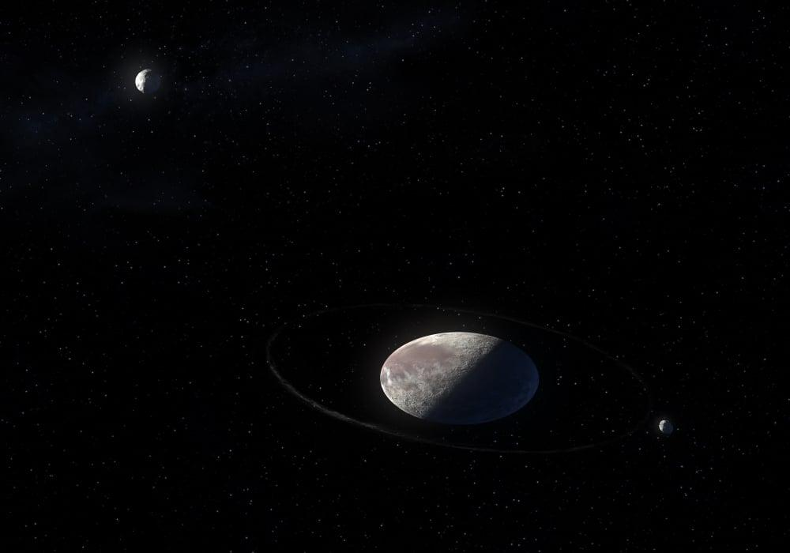

Year
One year on Haumea lasts around 285 Earth years.
Haumea is a dwarf planet located far beyond Neptune in a region called the Kuiper Belt.
It is one of the most unusual objects in the solar system because of its strange elongated shape and extremely fast rotation.
Haumea was officially recognized as a dwarf planet in 2008 and is known for having a ring system, icy surface, and two moons.
Discover More ›
Haumea is one of the fastest rotating dwarf planets.

Haumea has a bright icy surface covered in frozen water ice.
Haumea is extremely cold because it is located very far from the Sun.
Its surface is mostly covered in crystalline water ice, making it one of the brightest objects in the Kuiper Belt.
Scientists believe that beneath the icy surface, Haumea may contain a rocky interior.
Unlike most planets and dwarf planets, Haumea is not round.
It has an elongated oval shape because it spins incredibly fast.
One full rotation takes only about 4 hours, making it one of the fastest rotating large objects in the solar system.

Haumea’s rapid spin gives it its unusual stretched shape.

Haumea has two known moons orbiting around it.
Haumea has two moons named Hiʻiaka and Namaka.
Scientists believe these moons formed after a massive collision long ago.
In 2017, astronomers discovered that Haumea also has a thin ring system, making it one of the few dwarf planets known to have rings.
One year on Haumea lasts around 285 Earth years.
One day on Haumea lasts only about 4 Earth hours.
Haumea orbits in the distant Kuiper Belt beyond Neptune.
Haumea is an extremely cold frozen world.
Classified as a dwarf planet
Located in the Kuiper Belt
Has an elongated shape
Rotates extremely fast
Covered in water ice
Has a thin ring system
Has two moons called Hiʻiaka and Namaka
Haumea is unique because of its unusual shape, rapid spin, and ring system.
It helps scientists better understand collisions and the formation of icy objects in the outer solar system.
Haumea is one of the most fascinating dwarf planets discovered in modern astronomy.
A video exploring dwarf planets in the solar system.
